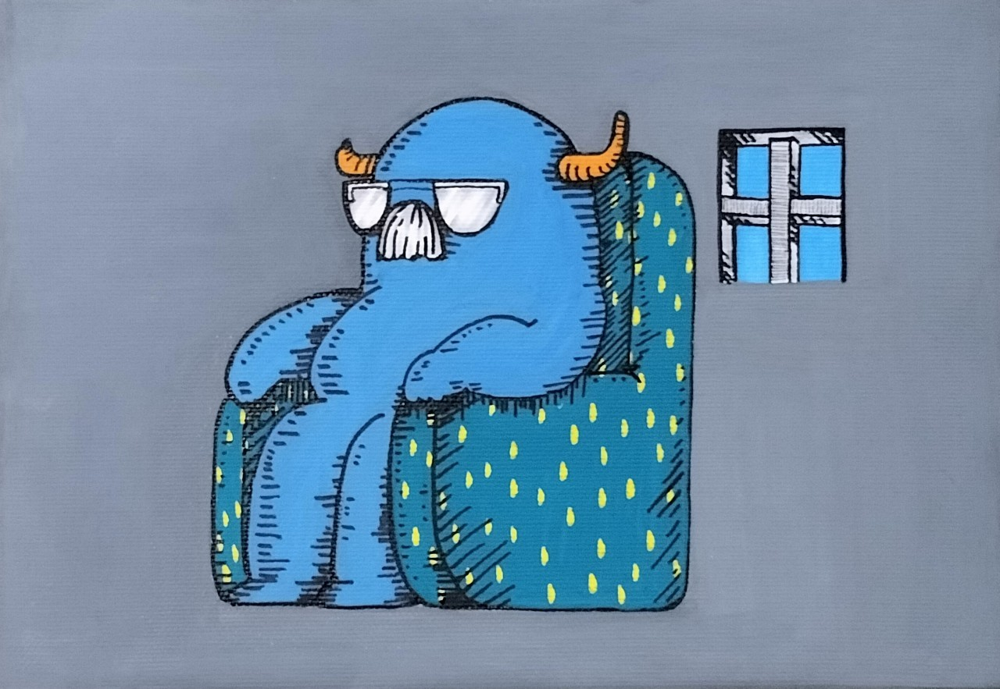
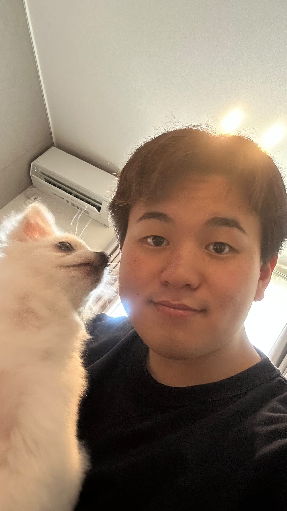
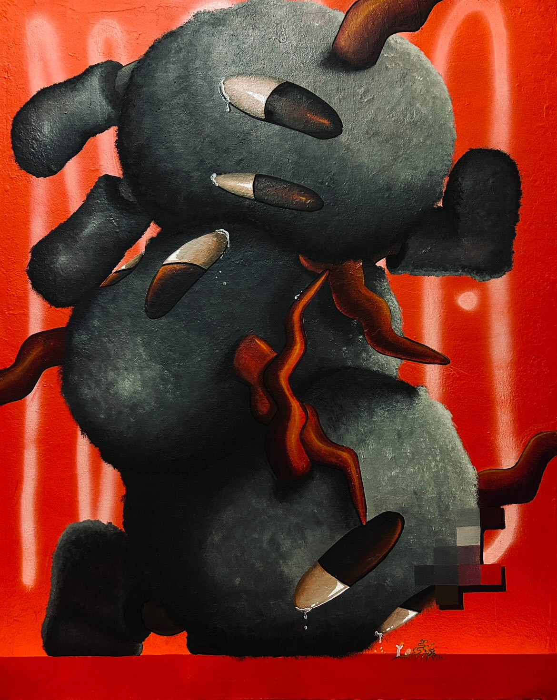
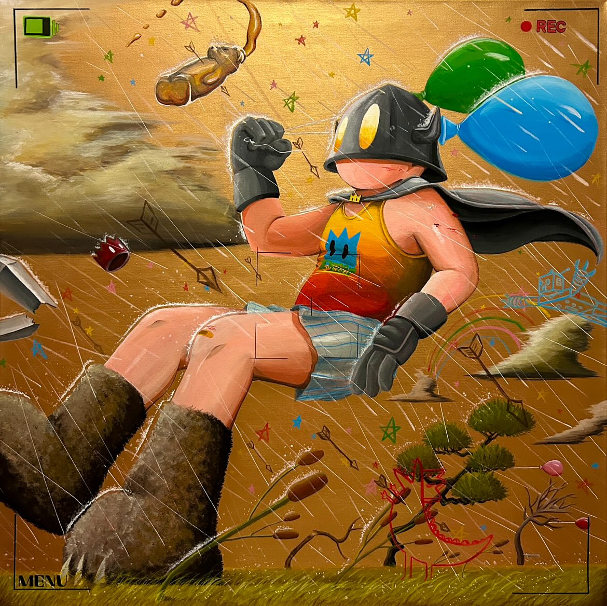
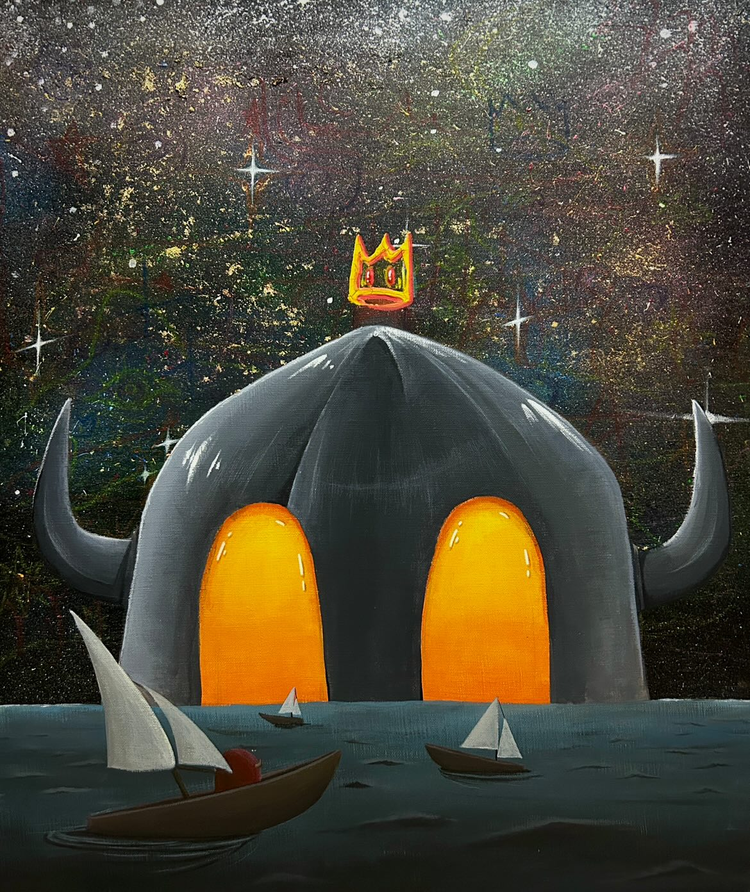
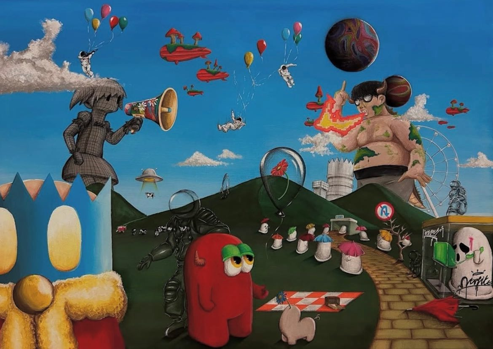
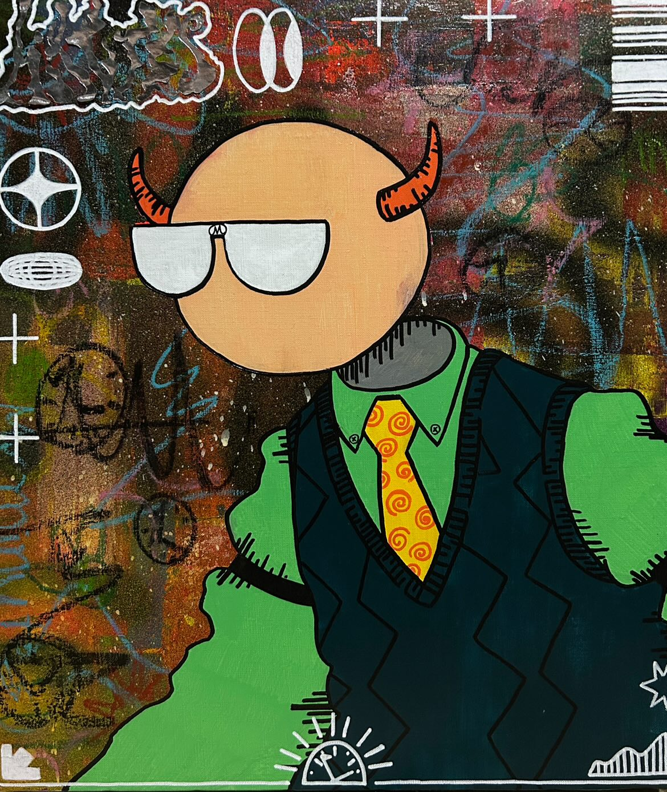
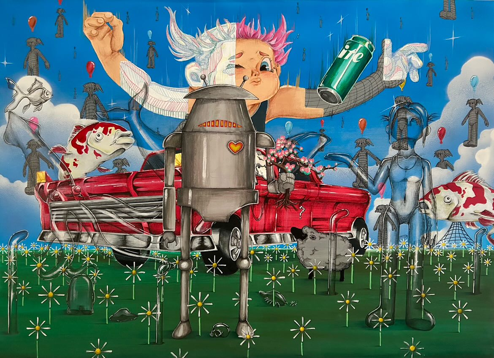
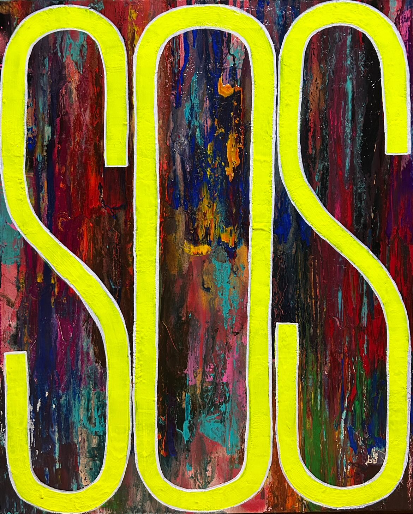

MASATAKA WADA
こちらでご覧いただけるのは私が創作活動を始めてか ら一年間、自身のスタイルを探求し続けた過程で、制 作したものです。


こちらでご覧いただけるのは私が創作活動を始めてか ら一年間、自身のスタイルを探求し続けた過程で、制 作したものです。

情熱と冷静の狭間で揺れ動きながら その姿を変えていく魂たちが流した涙は いずれ彼らの支えとなると信じている

賞後の焦りを胸に抱き続けつつ 風に抗う想いを強く込めながら 踏ん張る強さを描き出した記録

憧れと諦めの狭間をさまよいつつ 限界を受け入れなお歩み続けて 希望を見出す応援歌として描いた

迷いと期待を胸に抱きながら 過去と未来を往来し続けつつ 自問を封じた心の深き記録

焦燥と時間に追われ続けながら 出口のない長い道を歩きつつ 弱さを刻んだ証として残した

全力を賭け挑み続けた果てに 人生と未来を叩きつけて描き 画家の覚悟を得た大切な瞬間

救いを求め切実に描いた叫び 弱さと醜さを知り受け入れつつ 戒めとして胸に深く残り続ける